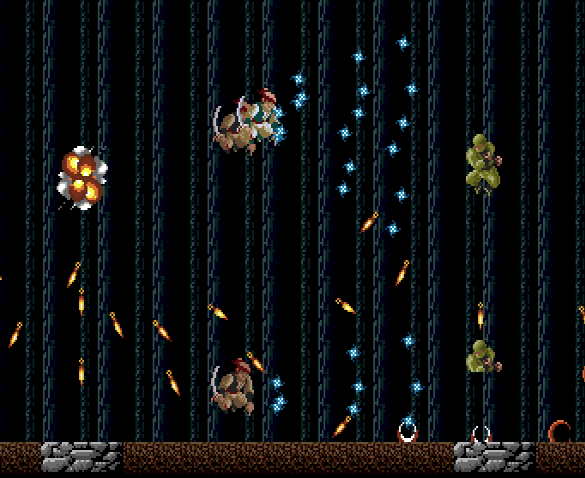
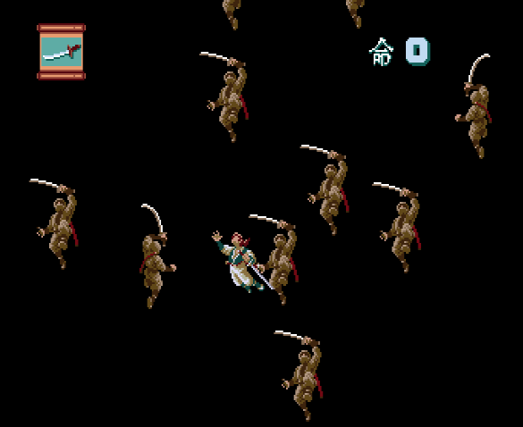
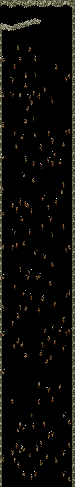
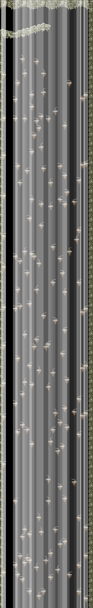

2025-06-10
I recently got to play through the PC Engine port of Ninja Spirit. It's a fun game!
Things quickly get out of hand. Did I mention that you can jump really high and shoot a lot?
Towards the end of the game you drop off a ledge and have to zig-zag through a swarm of floating ninjas. The gameplay of this part is maybe not so fun - you have to memorize a path down through trial and error. It looks quite neat though! In fact, it looked interesting enough that I decided to figure out how they made it work.
Not again...!
After falling down a few times it quickly becomes clear that the ninjas' positions are fixed. Maybe they're generating the positions procedurally, using a counter or some random number generator dedicated to this section?
A deeper inspection revealed it was nothing of the sort: there's just a list of ninjas stored on the cartridge, a grand total 151 of them! The ninja list is checked as you fall and spawns in ninjas as you approach them. It gets the job done, I suppose.
Ninja data struct:
{
u16 position_y,
u16 unused,
u16 function_ptr, // code to run for this object next frame
u16 position_x_flags, // x position + flags for sprite flip, front/back facing sprite, speed
u8 bank_select,
}
Since there's no fancy code to analyze this will be a fairly short post. We have images, at least!
I cobbled together a small program that spits out an image with all ninja locations, that's the left image below. There's also a second image that adds their hitboxes which are 32x8 in size. The position of the hitboxes are a bit of an approximation, though. Overlayed is a 1D heatmap: brighter stripes indicate ninja-dense areas while darker colors mean less crammed areas.
The left and right sides can clearly be seen to be the most devoid of ninjas, so it would be wise to tailor your fall around this two lines!
 